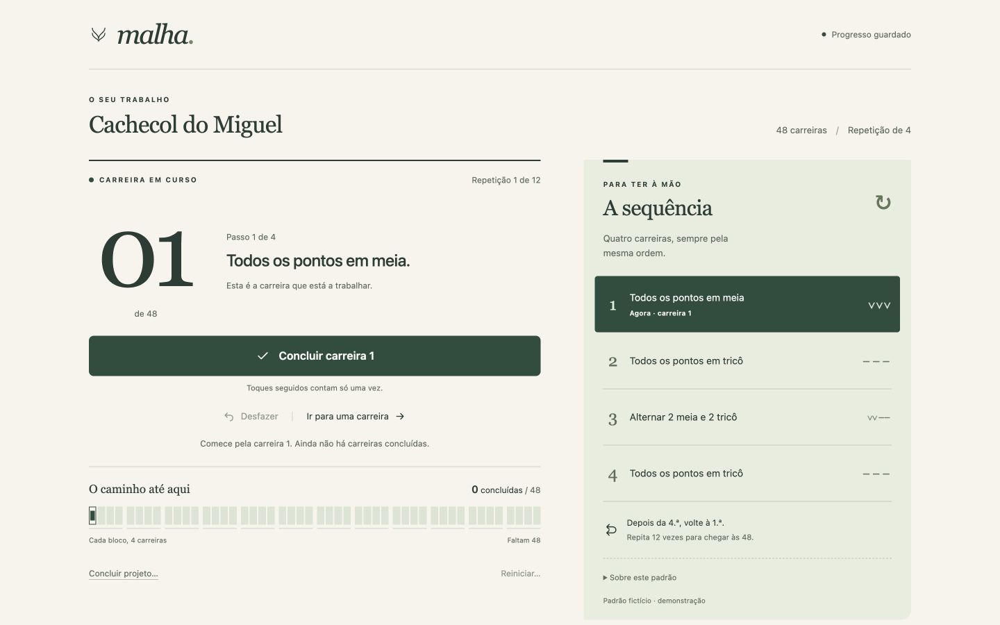
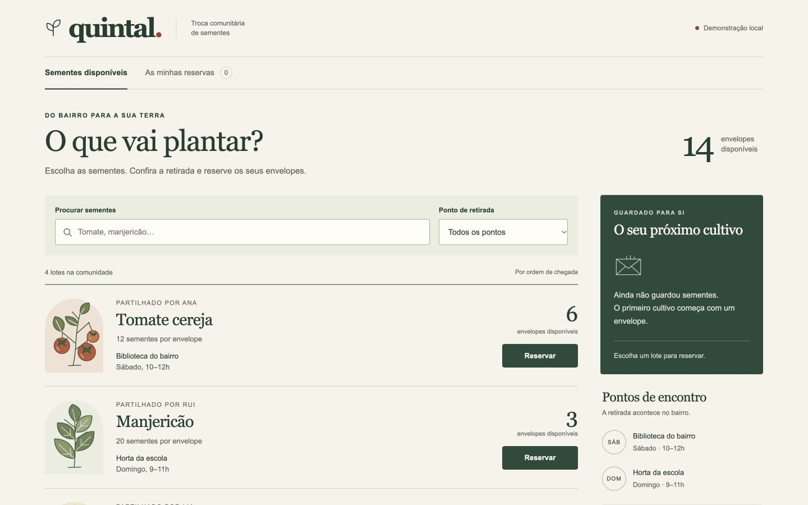
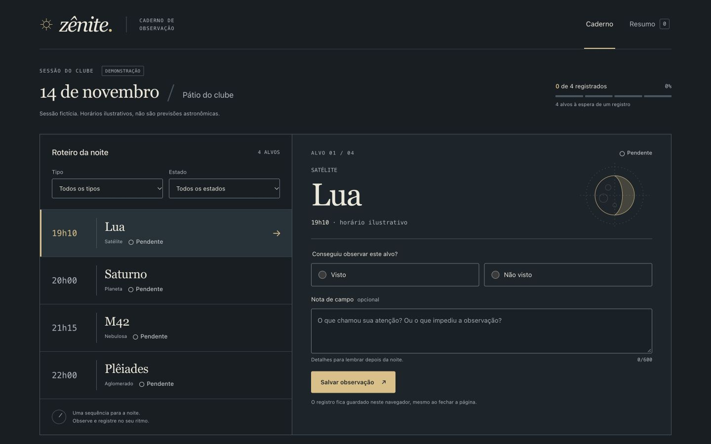

MalhaAcompanhar carreiras de tricô, corrigir avanços e retomar o trabalho.Abrir protótipoEstudo visual
QuintalEncontrar sementes, reservar envelopes e cancelar uma retirada simulada.Abrir protótipoEstudo visual
ZêniteRegistrar observações, distinguir pendências e revisar uma sessão.Abrir protótipoEstudo visual